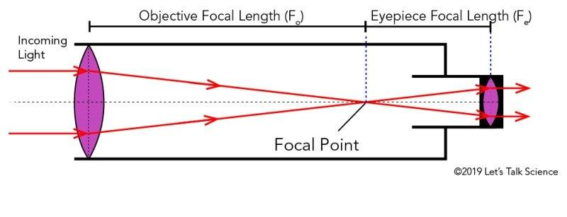
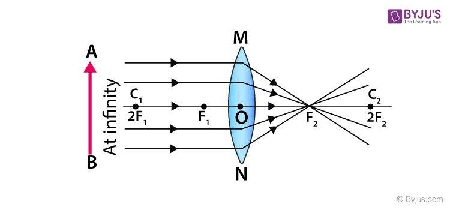
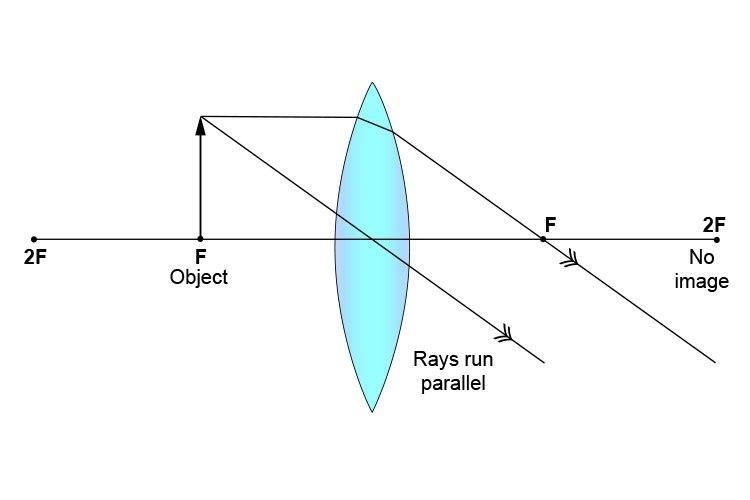

Since the dawn of human civilization, humans were obsessed with the sky; they worshipped its celestial objects, and made holidays and calendars based on its phenomena. After agriculture, sky observation importance grew so significant to know when the planting and sowing seasons were, plan for floods, learn weather patterns, and the list goes on. Humans were limited to their naked eyes—that was before the telescope was invented by a Dutch eyeglass maker, Hans Lippershey. He made a telescope that could magnify the image 3 times. At first, it was used only in military and sailing till Galileo Galilei modified it a bit to look at the sky, and that was the story of how telescopes became an essential tool in space exploration. Since the 17th century, telescopes were widely modified and reinvented using different methods. The first telescope was made of two convergent lenses (an objective lens and an eyepiece), but modern telescopes use mirrors and sensors like Hubble and the new Nancy Grace Roman Space Telescope. In this article, we are going to explain how the first telescope works.

So How Does the First Space Telescope Work?
To know how the telescope actually works, we need to be familiar with ray diagrams. Ray diagrams are simple drawings with a horizontal line called the principal axis showing how light forms an image after hitting a mirror or a lens, using 3 lines from the top of the object, each line following a rule:
- A ray that is parallel will reflect towards the focal point (the point where light converges or diverges to).
- A ray that travels through the focal point will reflect parallel to the principal axis.
- A ray passing through the center will keep going in a straight line.
After all that we have learned, we now can see how telescopes work. I encourage you to grab a pen and paper and try it out yourself—it would be fun! As mentioned before, the first telescope was made of 2 convergence lenses in a tube:
- We start our diagram by drawing the principal axis (just a straight line), then draw the convergent lens and choose a reasonable number for the focal length (the distance between the focal point and the center of the lens).
- We start with the objective lens. We can imagine the light coming from a really far away object like the sun as light coming from an object at infinity, and light coming from infinity is parallel.

So if we draw the ray diagram, we will get an inverted, much smaller image of the object. Then we move the objective lens until that image is formed at the focal point of the second lens (eyepiece).
3. We can draw another ray diagram for the eyepiece, same as the first one, but with the object at the focal point, and we can see that we get a large upright image.

So that's how the first telescope works: by making a small image of the object inside it with the first lens, and magnifying that image with the second lens.
Thanks for reading!
References
- https://www.space.com/21950-who-invented-the-telescope.html
- https://physics.stackexchange.com/questions/155996/why-do-we-assume-that-rays-from-infinity-are-parallel
- https://www.physicsclassroom.com/tutorial/refraction-and-lenses/lenses/converging-lenses-ray-diagrams
- https://byjus.com/physics/concave-convex-lenses/